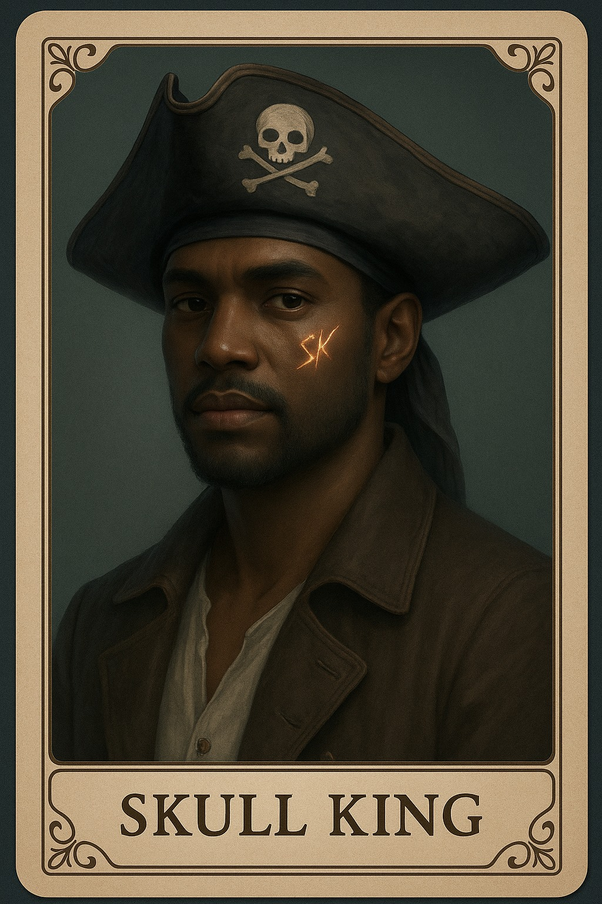
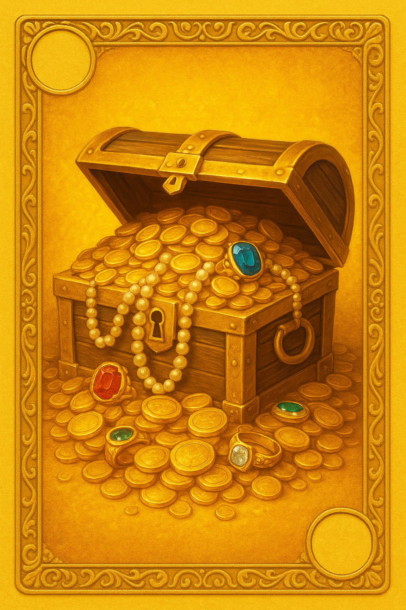
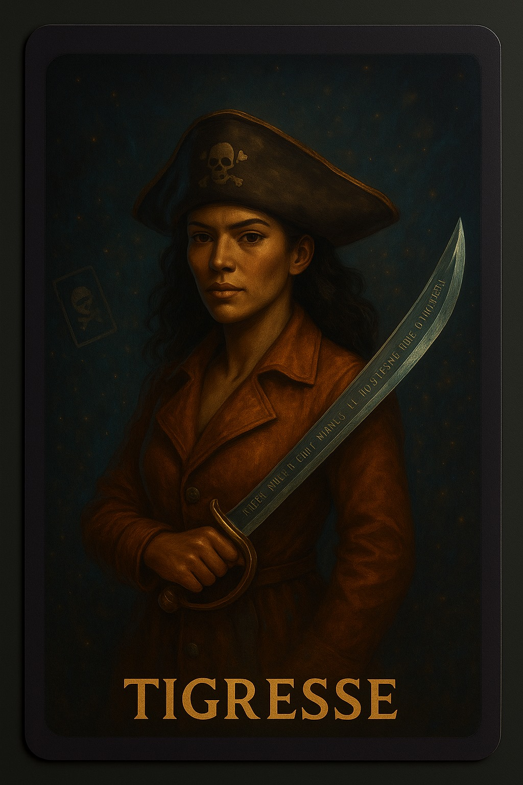
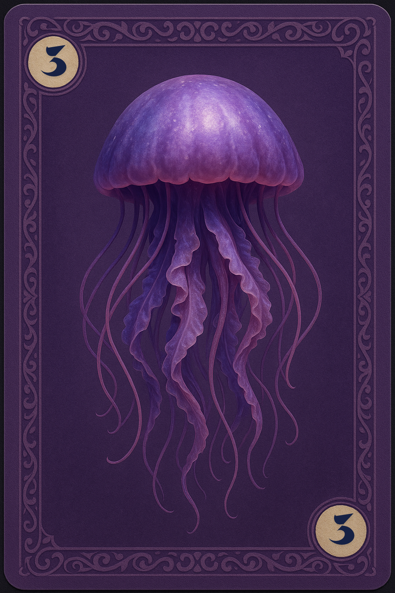
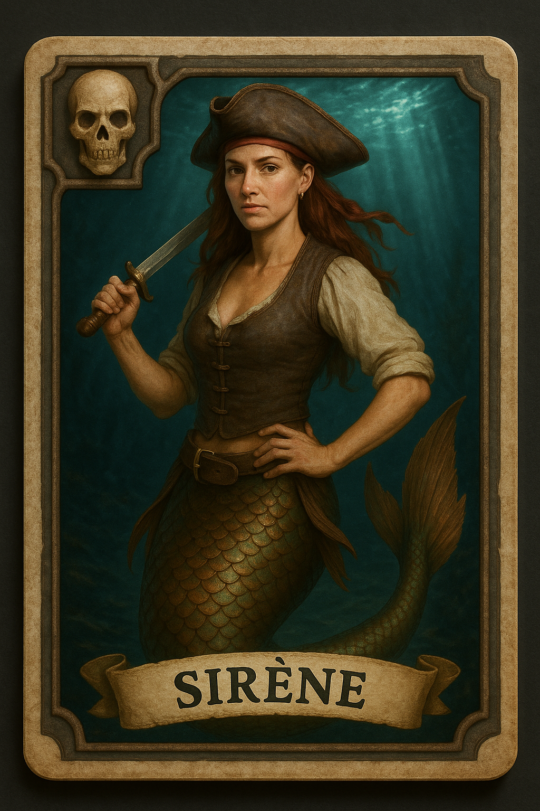
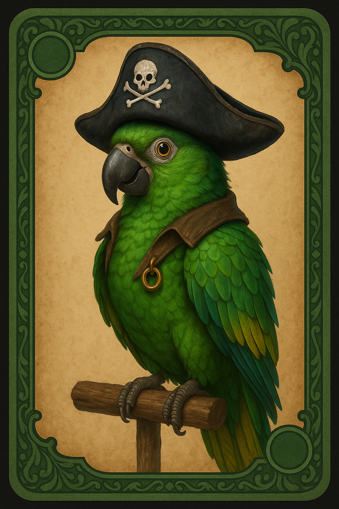

Les règles du jeu Skull King (Selon notre version)
Skull King est un jeu de plis mêlant stratégie, bluff et anticipation. Le but du jeu est de remporter exactement le nombre de plis prédit (la mise) au début de chaque manche.
Cartes et hiérarchie
     -
56 cartes NORMALES numérotées (1-14): noires, vertes, jaunes, violettes
- Couleurs faibles : Ce sont les cartes vertes, jaunes, et violettes. Elles perdent contre toutes les autres cartes du jeu. Mais quand une carte normale de couleur faible joue contre une autre carte du même type, alors la carte ayant la plus faible valeur numérique perd.
- Couleurs fortes : Ce sont les cartes noires. elles gagnent contre toutes les cartes normales couleurs faibles (peu importe leurs valeurs numériques) mais perdent contre toutes les cartes spéciales exceptée la carte fuite. Lorsqu'une carte noire joue contre une autre carte noire alors la carte avec la plus grande valeur numérique gagne .
-
14 cartes SPECIALES : Pirates (5 cartes), Sirènes (2 cartes), Skull King (1 carte), tigresse(1 carte), fuites (5 cartes)
- Cartes Pirates : Elles gagnent contre toutes les cartes normales et les cartes Sirènes, mais perdent contre la carte skull king.
- Cartes Sirènes : Elles gagnent contre toutes les cartes faibles et le skull king (ce dernier ayant un faible pour les Sirènes). En contre partie , les cartes Sirènes perdent contre les cartes Pirates.
- Carte skull king : Cette carte gagne contre toutes les autres cartes du jeu, à l'exception des cartes Sirènes.
- Cartes tigresses : Ces cartes ont une particularité car elles peuvent être jouer comme une carte pirate ou une carte fuite (le choix revient au joueur détenant la carte).
- Cartes fuites : Ce sont les cartes neutres , qui perdent contre toutes les autres cartes du jeu
- NB : Lorsque 2 ou plusieurs cartes spéciales de même type jouent les unes contre les autres (Ex : pirate contre pirate , sirène contre sirène ...) alors c'est la carte spéciale jouée en prémière position qui gagne
- Hiérarchie : Skull King > Pirates > Sirènes( > Skull king) > Couleurs fortes > Couleur faibles > fuites
Déroulement d'une manche
- Chaque joueur reçoit un nombre de cartes égal au numéro de la manche (Ex: manche 2 = deux carte par joueur)
- Les joueurs misent combien de plis ils vont remporter
- Chaque joueur joue une carte à tour de rôle
- A la fin du tour, les cartes sont ensuite comparées
- le joueur ayant joué la carte la plus forte remporte le plis
- Ainsi de suite jusqu'à l'épuisement des cartes de la manche
Points (Score selon Rascal)
- Au debut de chaque manche un nombre de points maximum à gagner est mis en jeu (manche 2 = 20points, manche 5 = 50points ...)
- Prévision correcte (le nombre misé au debut de la manche est égal au nombre de plis remporté) : le joueur remporte la totalité des points
- Prévision presque correcte ( le nombre misé au debut de la manche et le nombre de plis remporté ont une différence de 1 ) : le joueur remporte la moitié des points
- Prévision incorrecte ( le nombre misé au debut de la manche et le nombre de plis remporté ont une différence de 2 ou plus ) : le jouer ne remporte aucun points
Remarque
On a simplifié certaines règles pour que ce soit plus gérable en Python : par exemple, pas de Scary Mary, et on a créé nos propres visuels pour les cartes normales et spéciales.